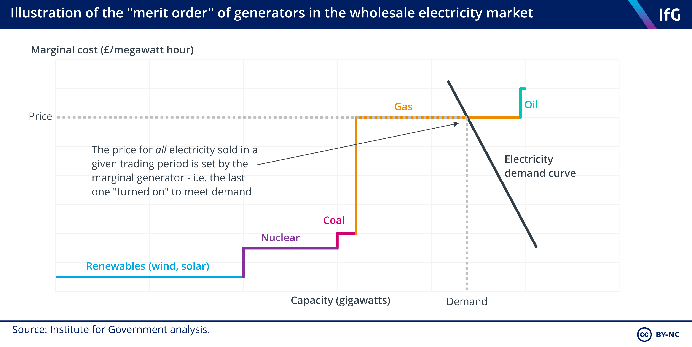
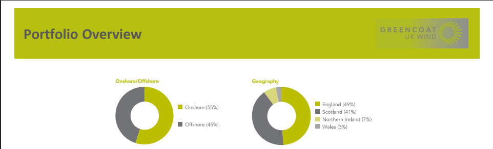
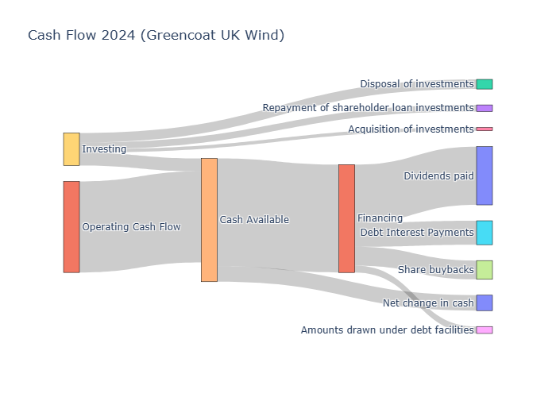
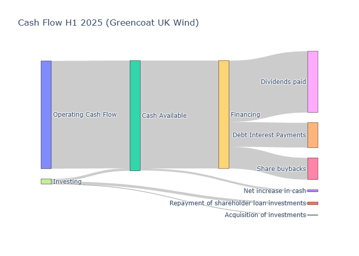
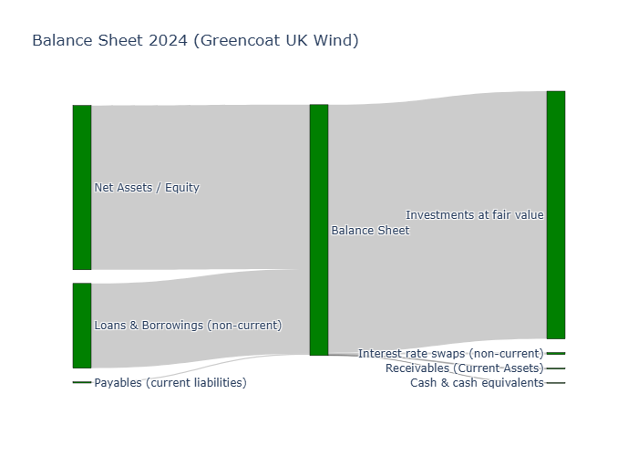
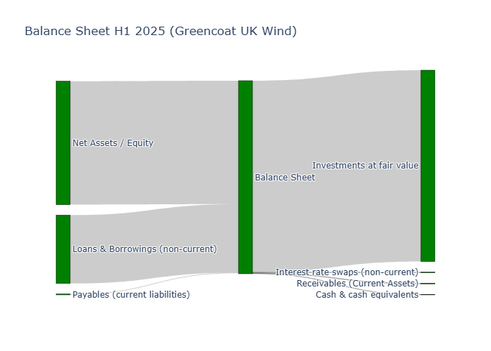
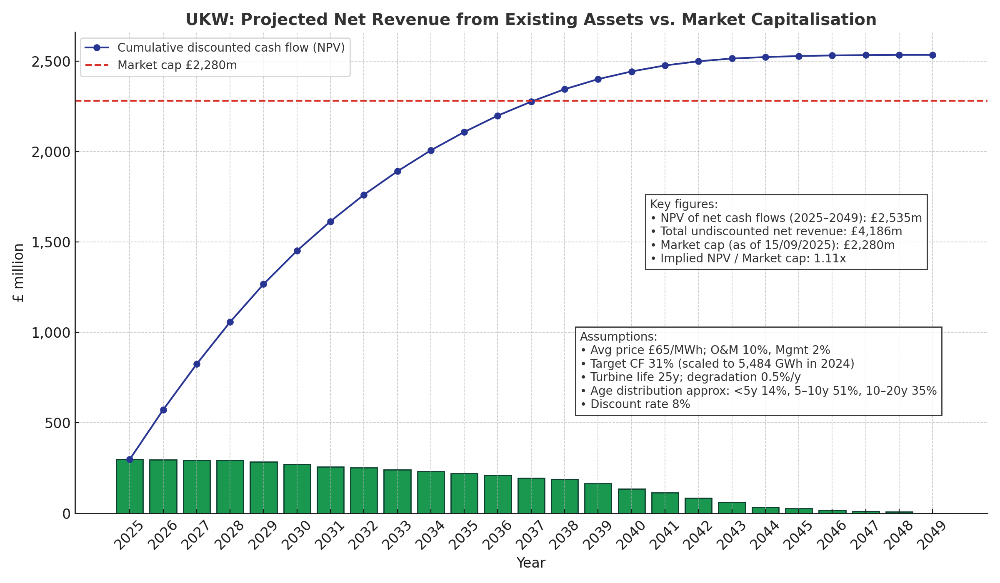
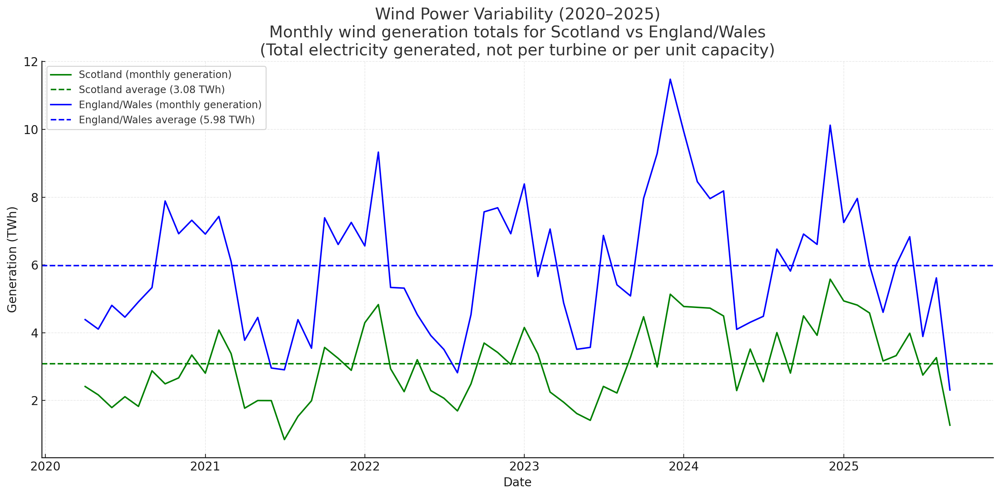
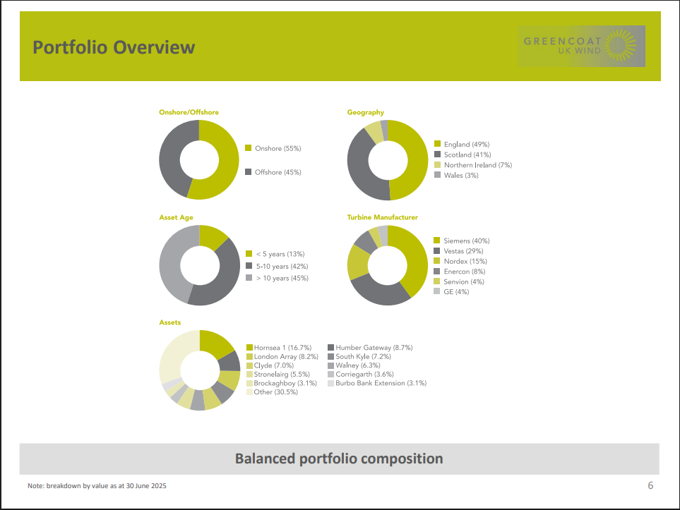

Greencoat UK Wind (UKW) – High-Yield Renewable Power Play
Market Overview: Structural Pricing Advantage for Wind Energy
Under the UK's marginal-cost wholesale pricing system, all electricity generators get paid the price of the most expensive unit needed to meet demand—usually gas-fired power [1][2]. In practice, this means wind farms (with near-zero fuel cost) can sell power at the same high price set by costly gas generation. This pricing model has been in place for decades (with the Government affirming its efficiency in a 2022 review [3]) and has not materially changed since the market's liberalisation. As a result, surging gas prices translate into windfall revenues for low-cost renewable producers [4].

Wind price and demand dynamics: the chart highlights how low-cost renewables clear alongside higher-cost thermal generation, capturing the gas-set power price.
Over the past two years, this dynamic became a "money glitch" for renewables. Gas prices spiked dramatically in 2021–2022 [5][6] (due to post-Covid demand and the Ukraine crisis), driving UK wholesale electricity prices to record levels. Wind farms, whose operating costs did not rise comparably, enjoyed exceptional profit margins. For example, many non-gas generators reported large profits in 2022 thanks to the gas-driven price surge [4]. (This prompted the UK government to introduce a 45% windfall levy on low-carbon generator profits above a threshold [7]—a measure in effect until 2028.)
Looking ahead, it's unlikely that the fundamental pricing mechanism will be upended in the near term. While the Government is studying market reforms to decouple renewables from gas (the REMA consultation) [8][9], no major changes have been implemented. In fact, officials recently ruled out certain ideas (like "zonal pricing" by region) that could have penalised renewables [10]. The current system provides transparent price signals and incentivises investment in low-cost generation [3]—aligning with the UK's long-term net-zero strategy. Bottom line: UK wind producers benefit from selling "free" wind power at fossil fuel prices, a structurally favorable setup that has persisted for years.
Wind Energy Economics: High Margins from Low Costs
Wind power's business model is simple: large upfront investment, low ongoing cost, and steady output. Once a turbine is built, the wind itself is free—so the marginal cost of generation is negligible [2]. This contrasts sharply with gas or coal plants that must continuously pay for fuel. As a result, wind farms can achieve impressive returns by selling into the high-priced wholesale market.
To illustrate, consider typical project economics for onshore vs. offshore wind in the UK:
Onshore Wind: Installation costs range around £1.3–2 million per MW of capacity [11]. A 1 MW onshore turbine can generate roughly 2,500–3,000 MWh per year under average wind conditions (~30–35% capacity factor). At a wholesale price of ~£100/MWh (seen during recent high-price periods), that yields ~£250,000–£300,000 annual revenue per MW. In simple ROI terms, that's ~15–20% of the upfront cost per year, before maintenance expenses. Even at more moderate power prices (~£60–70/MWh), onshore projects can still earn low-teens percentage returns on capital. These back-of-envelope figures align with global data showing onshore wind's levelised cost has fallen to around $33/MWh (≈£27) in recent years [12]—far below recent market prices.
Offshore Wind: Offshore turbines harness higher wind speeds (capacity factors 45–50% or more) but come with much steeper capex—up to £3–5 million per MW installed [11]. The greater output partly compensates, but at £100/MWh an offshore 1 MW unit (~4,400 MWh/year) would earn ~£440k annually, ~10–12% of its capex. Thus, offshore wind delivers solid but lower returns (high single-digit to ~10% yearly on investment) under similar pricing assumptions. Indeed, offshore wind's levelised cost (~$81/MWh, or ~£65) is roughly double onshore's [12], reflecting the tighter margins.
These simplified calculations exclude ongoing O&M costs and land/lease fees, but they illustrate the high inherent profit margins for wind farms in today's market. After construction, operating expenses are relatively low (wind farms have no fuel expense and moderate maintenance costs). This means a large share of revenue translates into operating cash flow or "EBITDA". For instance, an economic study found onshore wind projects retain about 15–20% operating surplus on revenues (even after staff and supply costs) [13]—a healthy margin comparable to many conventional industries.
Crucially, wind project economics have improved dramatically over the past decade. Scale and technology advances drove down the lifetime cost per MWh by ~68% for onshore and ~60% for offshore from 2010–2021 [14]. Bottom line: In the current UK market, a well-run wind farm is a cash-generating asset, often yielding mid-teens percentage returns on invested capital—especially for onshore sites—thanks to low operating costs and a power price benchmarked to far costlier fuel sources.
Company Profile: Greencoat UK Wind's Assets and Cash Flows
Greencoat UK Wind (UKW) is the UK's largest listed renewable infrastructure fund, exclusively invested in domestic wind farms [15]. The company's portfolio consists of 49 operating wind farm investments (a mix of onshore and offshore) with net generating capacity of ~2.0 GW as of December 2024 [16]. This makes UKW a significant player—it owns roughly 6% of all UK wind capacity [17], with over 1,400 individual turbines under management.
Asset Base and Output
UKW's wind farms are geographically diversified across the UK. By portfolio value, about 55% of assets are onshore projects and 45% offshore [18]. In terms of location, ~49% of the portfolio value is in England and ~41% in Scotland (with ~7% Northern Ireland and 3% Wales)—reflecting broad regional spread [18]. This diversity helps smooth out local wind variations and grid constraints. In 2024, UKW's fleet generated 5,484 GWh of renewable electricity [19]—enough to power ~2 million homes and displace 2.2 million tonnes of CO2 [20]. Notably, generation in 2024 was 13% below budget due to unusually low wind speeds and an offshore cable outage (at Hornsea 1) [21]. Even so, the portfolio produced roughly a 31% capacity factor for the year (5.48 TWh output on ~1.98 GW capacity). In a more typical wind year, output would likely have exceeded 6 TWh.

Type of assets and thier region (see full figure in the end of the document)
Asset Life and Growth
Wind turbines generally have a design life of ~25 years, and UKW's portfolio is middle-aged with a weighted average age ~8–9 years [22]. About one-third of assets are over 10 years old, half in the 5–10 year range, and ~14% are new (<5 years)—implying a long remaining lifespan for most projects. By our estimates, the current assets have an average ~17 years of useful life remaining. This means significant embedded revenue potential: assuming no expansions, UKW's 2 GW portfolio (at ~35% average load factor) could generate on the order of 100–110 TWh over its remaining life—worth roughly £6–7 billion in future revenues at today's power prices (e.g. ~£65/MWh, which was the average price UKW captured in 2024 [23]). This rough calculation underscores that the book value of UKW's assets (£3.4 billion NAV) [24] is solidly backed by decades of cash flows ahead. Furthermore, most of UKW's projects benefit from long-term agreements or subsidy support: a large portion of revenues comes from fixed-price Contracts for Difference (CfDs) or inflation-indexed Renewables Obligation Certificates (ROCs) [25]. In fact, around 60% of UKW's forecast revenues for the next four years are fixed and inflation-linked [26], providing a stable base income irrespective of short-term power price swings. Any merchant exposure on top creates upside (as seen in recent high-price periods).
Assets life and turnbine manufacturers (see full figure in the end of the document)
Cash Flow Focus
UKW is structured to prioritise cash generation and distribution rather than accounting profits. The company deliberately eschews net-income metrics like EPS or P/E, because depreciation on its wind farms (a non-cash expense) heavily depresses GAAP earnings. In 2024, for example, UKW's net income was reduced by large depreciation charges, even as operating cash flow was robust—leading to an accounting loss and a meaningless P/E ratio (reported as negative on financial sites [27]). This is not a concern; it's a consequence of UKW continuously investing in new assets (and depreciating them) while enjoying actual cash receipts from generation. The key metrics for a renewable infrastructure fund are cash flow and asset value, not short-term net profit. UKW's philosophy is to reinvest enough cash to "preserve the capital value" of the portfolio in real terms, while paying out the surplus as dividends [28].
Financial Performance
UKW's latest results underscore its strong cash generation. In 2024, the portfolio's net cash generated (at the asset SPVs + group level) was £278.7 million [19]. This comfortably covered the dividends paid out (£226.8m, or 10p per share) by about 1.3× coverage [29][30]. Even with below-budget wind output, underlying dividend cover was ~1.3 times—indicating a healthy buffer. Excess cash (not paid as dividend) was reinvested or used for buybacks, enhancing asset value per share. Notably, management projects over £1 billion of excess cashflow will be generated in the next five years [31], which can support further reinvestment, debt reduction, or shareholder returns.

2024 cash flow walk showing asset SPV generation, group cash, dividends, and reinvestment.

H1 2025 interim cash flows illustrating dividend coverage and retained surplus.
Balance Sheet and Leverage
On the balance sheet, UKW employs prudent leverage to boost equity returns. As of Dec 2024, aggregate debt was £2.24 billion (approximately 40% of gross asset value) [32]. This ~40% gearing is moderate for infrastructure assets with steady cash flows—it enhances equity returns (low-cost debt funding part of the portfolio) while remaining within a conservative limit (the board's policy is to keep debt ≤ 40% of assets) [33]. UKW refinanced a chunk of its loans in 2024 at attractive terms (5–7 year tenors) [34], and maintains a £400m revolving credit facility for flexible funding [34]. The interest costs are well-covered by project income, and the physical wind farm assets act as solid collateral, mitigating lender risk. In short, debt is used judiciously to finance acquisitions, essentially "locking in" cheap financing against long-lived renewable assets—a sensible strategy in an asset-heavy business.

2024 balance sheet composition with asset categories, leverage, and NAV bridge.

H1 2025 balance sheet snapshot highlighting changes in cash, debt, and asset values.
Valuation & Outlook: Inflation-Linked Dividends at a Discount
Dividend Yield and Policy: UKW is fundamentally an income-focused vehicle. It aims to deliver an annual dividend that grows with inflation (RPI) while preserving capital in real terms [28]. The trust has an unbroken 10+ year record of dividend increases, in fact growing the payout faster than inflation cumulatively [35]. For 2024, the dividend was 10.0 pence per share, and for 2025 the company has guided 10.35 pence (a 3.5% increase, matching December 2024 RPI) [36][37]. UKW has maintained or raised its dividend every year, targeting increases in line with RPI inflation. The current yield is ~9% and management remains committed to inflation-linked growth [38]. At the current share price, this equates to a dividend yield around 9%—extremely attractive in today's market, especially for what is essentially a low-risk infrastructure asset. Management has reiterated its confidence in continuing RPI-linked dividend growth and long-term capital preservation [39][40]. Importantly, the dividend is well-supported by cash generation (1.3–1.4× covered in recent periods) [29][41], so UKW is not paying out of principal—it is distributing genuine earnings from wind farm operations. Investors can therefore view the current ~9% yield as sustainable income, largely insulated by inflation escalators on revenue and with a built-in growth rate equal to inflation going forward.
Trading at a Discount: Despite these strengths, UKW's stock has been trading at a significant discount to its net asset value (NAV). As of year-end 2024, NAV was 151.2 pence per share, while the market price was around 128p, a 15.6% discount [42][43]. That discount has widened further in 2025 amid broader sector pessimism—recently around 25% below NAV [44]. In other words, investors today can buy £1 of UKW's wind farm assets for roughly 75–85 pence. Such a discount is compelling, given the high quality and long-term nature of those assets (wind farms valued at independent appraisals and even recently confirmed by asset sales at NAV [45]). The wide discount appears driven by short-term sentiment: rising interest rates and a general selloff in renewables funds have hurt all peers [46][47]. However, UKW's management has been proactive in defending the share price—including launching £200m of share buybacks since late 2023 [48][49] and even executing selective asset disposals to fund those buybacks [45]. They also reduced fees (now calculated on the lower of NAV or market cap) to be shareholder-friendly while the discount persists [50]. These actions signal strong alignment with investors and have started to stabilise the discount. In the medium term, if the discount narrows back toward NAV, investors buying at today's price would enjoy capital appreciation on top of the rich dividends.
Total Return Potential: UKW's internal return targets are around 8–10% annually, and it has historically delivered in that range. The portfolio's levered IRR is ~11%, which after fund costs translates to a ~10% net return on NAV [51][52]. At the current 25% discount, the implied return on market price is even higher (since you're paying £0.75 for £1 of assets yielding 10% on NAV, the effective yield on cost would be ~13% if NAV is eventually realised). Even ignoring a future discount closure, an investor at the current price can reasonably expect around 9–10% annual total return composed mainly of the 9% cash dividend yield (which itself will rise with inflation). This double-digit return comes with low fundamental risk—UKW's beta to the equity market is only ~0.2 [53], reflecting much lower volatility than typical stocks. Over 5–10 year horizons, UKW has been one of the best-performing renewable infrastructure trusts and offers portfolio diversification (its NAV returns are driven by wind resources and energy economics, not the business cycle or consumer demand) [54]. In short, at current levels UKW looks like a high-yield bond proxy with equity upside: a 9% growing yield, backed by regulated hard assets, and potential for capital gains if sentiment improves.

Forecast future revenue stacked against current market capitalisation, highlighting the implied discount.
Risk Assessment and Mitigation
No investment is without risks, and we outline the key factors for UKW:
Wind Resource Variability: Wind speed is the fuel for UKW's business, and it fluctuates naturally. While inter-annual variation is usually modest, there can be short-term swings. 2024 underscored this risk: UK-wide wind speeds were unusually low, and a single technical fault (a subsea cable at an offshore farm) further cut output, causing generation to fall 13% below plan [21]. Consequently, UKW's NAV dipped ~7.9% and earnings were lower than expected [55][56]. Investors also saw the share price wobble (UKW fell ~11% in total return in early 2025) amid these headwinds [57]. It's important to note, however, that dividend was still covered 1.3× and paid in full [29]—the impact was a timing issue, not a permanent loss. Wind variability tends to even out over time: a calm year is often followed by a windier year, and the geographic spread of UKW's farms provides some averaging (stormy in one region may compensate for calm in another). Long-term investors should expect occasional below-average wind periods; these are buying opportunities, not reasons to panic. For example, when UKW's stock dipped on 2024's low output news, the long-run value of its assets hadn't changed—the wind will blow again. A patient investor could add on such dips, locking in a higher yield. UKW's management also mitigates variability by maintaining robust dividend cover (retaining cash in good wind years to buffer the weak ones) and employing conservative wind assumptions in its planning.

Wind resource volatility across the UK relative to budgeted expectations.
Regulatory/Government Policy Risk: A significant risk would be a change in the favorable market structure or support schemes. For instance, if the government were to reform the pricing mechanism so that renewables no longer receive the marginal gas-driven price (e.g. splitting the market, or a cap on inframarginal prices), that could reduce UKW's future revenues. However, such drastic reform appears unlikely in the near term. The current government—and indeed all major parties—remain committed to expanding renewables aggressively (Net Zero targets). In 2023, the UK consulted on market reforms but has so far not implemented a new design [8]. In fact, the outlook is more supportive: the government has increased ambitions for wind capacity (aiming to double onshore and triple offshore by 2030 [58]) and will need private capital—thus they have incentive to keep investment conditions attractive. Another policy risk could be a hostile stance by a future government (for example, a hypothetical administration rolling back net-zero initiatives or imposing strict new taxes). This seems low-probability given broad public and cross-party support for clean energy, but it's a scenario to monitor (e.g. if political winds shift by late-decade). Mitigation: UKW's diversified portfolio and focus on operating assets (not development-stage) mean it is fairly insulated from sudden policy shifts like subsidy cancellations. Even if new onshore wind builds were restricted by politics, UKW's existing assets would likely become more valuable (scarcity value of operating wind farms). If pricing reforms occur, they may involve compensatory mechanisms (like contracts or split markets that still ensure decent returns for legacy assets). UKW also actively engages in policy consultation through industry groups to advocate for investor interests.
Power Price and Macro Risk: Wholesale electricity prices have fallen from the extreme highs of 2022; if they stay structurally lower (e.g. due to prolonged low gas prices or oversupply of renewables), UKW's merchant revenues would be lower. Against this, remember ~60% of UKW's near-term output is hedged or fixed at preset prices [26] (via RPI-linked ROCs, fixed-price CfDs, etc.), which cushions the blow. Also, lower power prices tend to be accompanied by lower inflation—which would reduce UKW's costs and the discount rate used in its NAV (potentially increasing NAV). There's also interest rate risk: as a yield vehicle, UKW's share price is sensitive to bond rates. The past year's sector selloff was largely due to rising gilt yields (the risk-free rate), which made investors demand a higher yield and hence a lower price (wider discount) [47]. If high rates persist or climb, infrastructure funds may continue trading at discounts. Mitigant: UKW's dividend is inflation-linked and growing, so its yield in real terms stays competitive. As rates stabilise or fall (many forecasts see UK rates peaking), income stocks like UKW should regain appeal. UKW has also partially hedged interest rates on its debt and can use asset sales to reduce gearing if needed [33]—so its balance sheet is resilient to rate changes.
Operational and Other Risks: Given 49 wind farms, there's potential for technical issues (as seen with Hornsea's cable fault) or outages. UKW mitigates this by insurance and by portfolio scale—a single asset is usually only a few percent of the total, so issues are not catastrophic to the whole. The portfolio is also diversified across 6 different turbine manufacturers and many sites [59], reducing concentration risk in technology. Extreme weather (like storms, icing, etc.) can cause temporary downtime, but turbines are engineered for harsh conditions and insured. On the flip side, climate change could alter wind patterns in the long term—this is being studied, but there's no clear negative trend for UK wind yet (some scenarios even predict higher wind productivity in Northern Europe). Finally, ESG or political backlash against wind farms (e.g. local opposition to new onshore turbines) could slow growth opportunities, but this doesn't directly impair UKW's existing assets—if anything, limits on new builds strengthen prices for incumbent assets.
Hedging Strategy – Protecting Downside
For investors particularly concerned about major downside events (for example, a 2029 general election that brings an unexpectedly anti-renewables government, or a market crash), it is natural to consider hedging strategies. In principle, one might look to buy long-dated protective put options on UKW—essentially insurance that gives the right to sell shares at a predetermined "strike" price. However, UKW does not have a liquid market for long-term listed options, meaning such instruments are not readily available to retail investors.
Instead, there are several practical alternatives. Large institutions could negotiate an over-the-counter (OTC) derivative with a bank to replicate long-dated put protection. More accessible approaches for smaller investors include:
Rolling shorter-term options (if available) around key political or market risk events, accepting some cost to maintain protection.
Pairing the position with sector proxies (such as short positions in utility indices or UK power price futures) to offset part of the risk.
Holding cash reserves earmarked for re-investment during market stress, which functions as a built-in "option" to buy at lower levels.
The economics of such protection are straightforward. Any hedging cost reduces net income, but effectively locks in a minimum return. For example, UKW currently yields around 9% in dividends. If an investor spent the equivalent of 2% per year on protection (through rolling hedges or OTC structures), the net yield would fall to ~7%—still superior to most fixed-income yields. If adverse events never materialise, the cost is simply the price of insurance; if they do, the hedge pays off and preserves capital while dividends have been collected along the way.
In this way, a hedged UKW position could behave much like a bond proxy: investors secure a base yield (dividends minus hedge costs) with strong downside protection, while retaining upside if the stock performs well. Even without listed options, similar hedging can be done by, say, shorting a power price futures contract or a utilities index as a proxy, but those are less direct. Simpler yet, an investor could just trim their position if the political/regulatory environment turns decisively negative and re-enter later. However, our analysis suggests that such drastic risk events are remote. The core business model is robust and supported by secular trends (energy transition, energy security needs). UKW's assets generate essential electricity that the UK will need more of, not less. Thus, while we remain vigilant about policy changes and market conditions, we view the current risks as manageable and largely short-term in nature. The company's own risk review concludes that its model is "simple, low risk and proven", capable of delivering its 10% return target and inflation-proofed dividends despite market volatility [40].
Conclusion
Greencoat UK Wind offers a compelling investment case: it sits at the nexus of a favorable market structure and a critical growth sector (renewables). The UK's pricing system effectively hands wind generators a built-in margin by linking power prices to expensive fossil fuels—a dynamic unlikely to change soon. UKW has capitalised on this with a large, diversified portfolio of wind farms producing steady cash flows. The company converts those cash flows into a high (9%+) dividend for investors, growing each year with inflation. Operationally, UKW is well-managed, with disciplined acquisitions, active asset management, and prudent use of debt to boost returns. It has a decade-long track record of delivering cashflow and dividend growth to shareholders, outperforming peers over the long term.
At the current market price, the stock is undervalued, trading at a significant discount to the intrinsic value of its wind assets. This presents an opportunity to lock in an outsized yield and potential upside as the discount closes. Risks—from wind variability to interest rates—are real but mitigated by UKW's strategy (contracts, coverage, buybacks, etc.) and are largely transient. In a world seeking clean energy, UKW is providing it profitably, with government policy tailwinds (net-zero targets) rather than headwinds. For an investor with a medium to long horizon, Greencoat UK Wind represents an attractive "infrastructure yield + growth" play: low-risk 8–10% annual returns that are uncorrelated to the broader market, backed by tangible assets powering the UK's green future.
Sources: UK House of Commons Library – Energy Pricing Insight [1][4]; Greencoat UK Wind Annual Report 2024 [19][42]; AIC/Trust News – UKW 2024 Results [60][29]; Trustnet & Kepler Intelligence – Analyst Commentary [38][26]; Renewable energy cost data – RenewableUK, IRENA [14]; Company filings and investor presentations.
Figures
Image exports from the deck are provided below in the same order as the PDF. Replace or update assets in the assets folder if newer figures become available.
Cash Flow 2024
Asset-level and group cash generation versus dividends and reinvestment.
Cash Flow H1 2025
Interim 2025 cash flow walk illustrating coverage during a low-wind period.
Balance Sheet 2024
Year-end balance sheet composition with leverage, asset mix, and NAV bridge.
Balance Sheet H1 2025
Mid-year balance sheet movements across assets, debt, and equity.
Future Revenue vs. Market Cap
Projected cumulative revenue stream contrasted with current equity valuation.
Marginal Pricing Stack
Merit-order diagram showing how low-cost wind clears alongside higher-cost thermal units while receiving the marginal gas-set price.
Wind Power Variability
Rolling wind production relative to plan, underscoring resource volatility.
Portfolio Output Snapshot

Generation mix and regional contributions across the current portfolio.
Ruslan Lytvynov – BSc Economics and Mathematics, University of St Andrews. Quantitative research on renewable energy, infrastructure valuation, and cash-flow modelling.
 Merit-order diagram showing how low-cost wind clears alongside higher-cost thermal units while receiving the marginal gas-set price.
Merit-order diagram showing how low-cost wind clears alongside higher-cost thermal units while receiving the marginal gas-set price.